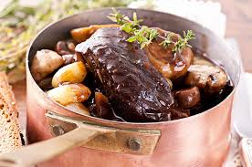

Boeuf Bourguignon
Recette à commencé la veille, faire mariner la viande au moins 24h. Le secret est de bien faire revenir la viande à feu fort pour qu'elle soit très dorée voire presque noire. Plus le plat aura mijoté très doucement avec des phases de repos, meilleur il sera (3 jours c'est encore mieux). Servire avec Pommes de Terre Vapeur
Ingrédients
- 300 à 400 g de boeuf pour bourguignon
- 1 oignons
- 2 ou 3 carottes
- 1 bouquet garni
- 1 bouteille de vin de bourgogne assez bon
- 50 g de beurre
- sel
- poivre
Recette
- Détailler la viande en cubes de 3 cm de côté, enlever les gros morceaux de gras.
- Couper l'oignon en morceaux. Le faire revenir dans une poêle au beurre. Une fois transparent, le verser dans une cocotte en fonte de préférence.
- Procéder de même avec la viande mais en plusieurs fois, jusqu'à ce que tous les morceaux soient cuits. Les ajouter au fur et à mesure dans la cocotte. Ne pas avoir peur d'ajouter du beurre entre chaque fournée.
- Quand toute la viande est dans la cocotte, déglacer la poêle avec de l'eau ou du vin et faire bouillir en raclant pour récupérer le suc. Saler, poivrer, ajouter au reste.
- Recouvrir le tout avec une partie du vin et faire mijoter quelques heures avec le bouquet garni et les carottes en rondelles.
- Le lendemain, faire mijoter au moins 2 heures en plusieurs fois, ajouter du vin ou de l'eau si nécessaire.